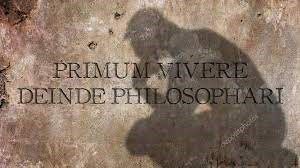

Martinetti e la Costituzione
L’Articolo 34 della Costituzione italiana recita:
“La scuola è aperta a tutti. L'istruzione inferiore, impartita per almeno otto anni, è obbligatoria e gratuita. I capaci e meritevoli, anche se privi di mezzi, hanno diritto di raggiungere i gradi più alti degli studi.
La Repubblica rende effettivo questo diritto con borse di studio, assegni alle famiglie ed altre provvidenze, che devono essere attribuite per concorso.”
L’applicazione, soltanto parziale, di un'istruzione garantita, pubblica e gratuita, è un enorme limite che influisce negativamente sulla possibilità di accesso a diritti costituzionalmente riconosciuti. Per questo motivo è essenziale tutelarla, fornendo a tutti i cittadini una base culturale per potersi inserire appieno nella società.
L’importanza del diritto allo studio viene anche implicitamente invocata da Martinetti:
"E vi è, purtroppo, una parte notevole dell'umanità che, alla soddisfazione delle necessità della vita, deve dedicare tutte le sue forze: questo è l'aspetto più doloroso della ingiustizia sociale."
Com’è evidente, il filosofo denuncia l’impossibilità per molti individui di potersi dedicare agli studi, in quanto impegnati a ottenere i beni essenziali per la sopravvivenza.
 “I bisogni e le difficoltà della vita ci costringono a sacrificare una parte più o meno notevole del nostro tempo e delle nostre energie alla conquista del benessere materiale: questo è ragionevole ed è umano: primum vivere, deinde philosophari.”
Proprio per questo, allora, Martinetti invita coloro che ne hanno la possibilità ad intraprendere i percorsi di studio come imperativo morale.